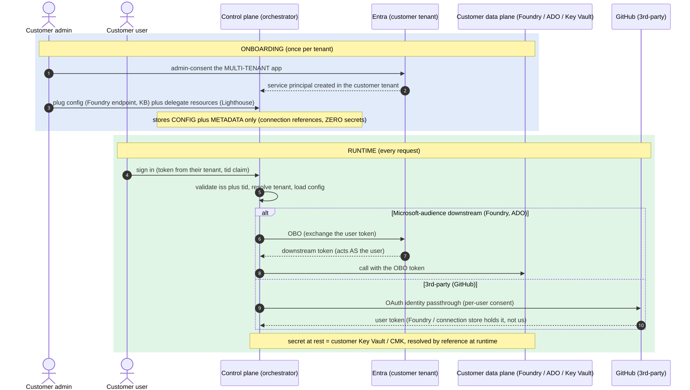

Os diagramas as-built por trás do deck de arquitetura: como o request resolve o tenant e
brokeia a credencial, e o que o store por-tenant guarda (config + referências — nunca
segredo, nunca dado). Fonte: docs/diagrams/saas/*.svg, gerados do Mermaid.

Foundry project do cliente) é a fronteira de isolamento. Fonte: 01-control-plane-vs-data-plane.mmd.
secret_ref. Fonte: 02-identity-credential-flow.mmd · ADR-003/005.
Tenant (tier/status) · DataPlaneConfig (ponteiros p/ Foundry/Search/storage) · Connection (auth_method + secret_ref que nunca é o segredo) · DomainAssignment. Fonte: 04-tenant-config-model.mmd · ADR-006.| Hoje (single-tenant) | Alvo (multi-tenant) |
|---|---|
settings = Settings() global | TenantConfigProvider.current() → config do tenant atual |
memory_scope() = user.oid | f"{tid}:{user.oid}" (namespace por tenant) |
SERVERS MCP estáticos no código | registry estático = catálogo; conexões + endpoints habilitados vêm do store por tenant |
require_domain() retorna 403 (entitlement, não feature-flag · ADR-010).